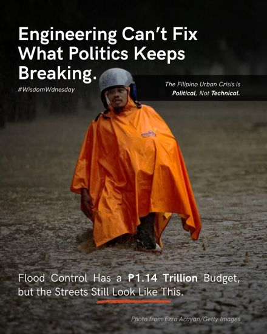
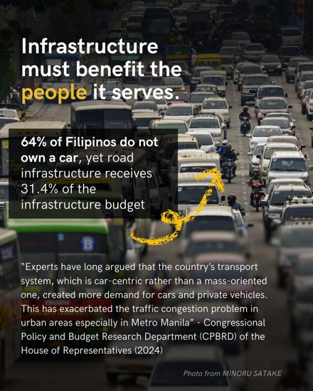
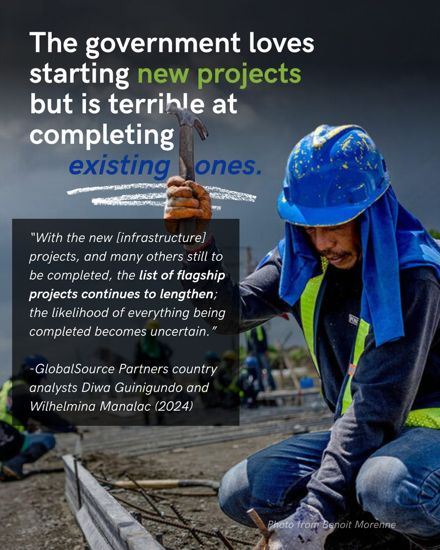
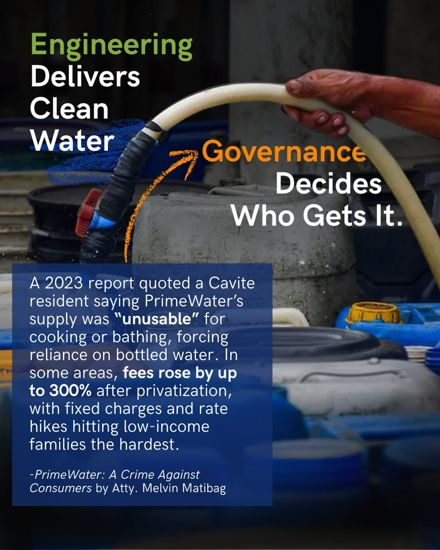
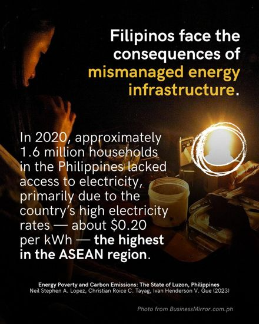
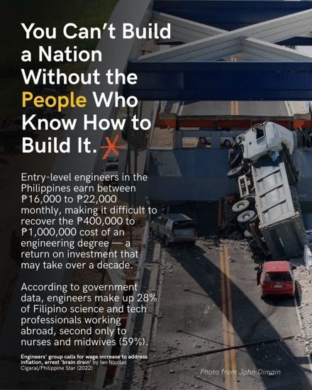
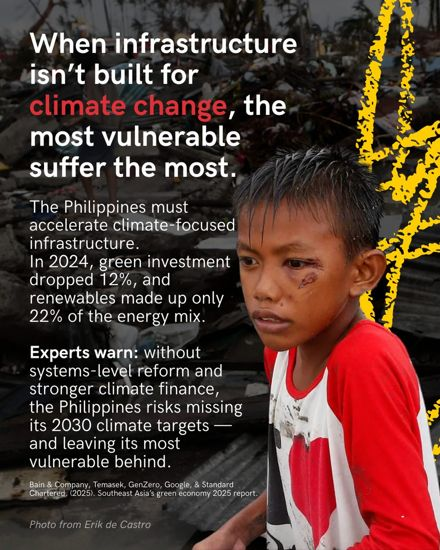
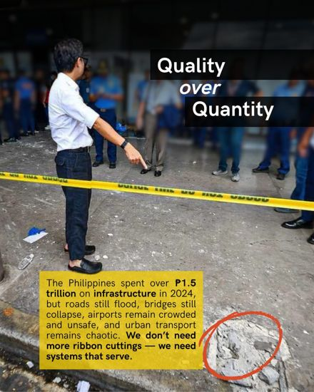

Gregor Ethan Rubin Posadas
M.S. · E.I. · ENV SP
PhD student in Environmental Engineering at UC Berkeley, in the Nelson Research Group, with a Designated Emphasis in Development Engineering.
About
I am a first-year PhD student in Environmental Engineering at the University of California, Berkeley, advised by Prof. Kara Nelson and co-advised by Prof. Maya Carrasquillo. I came to Berkeley from Boise State University, where I earned my bachelor's and master's degrees in Civil Engineering and studied the performance of retrofit oxygenation technologies in wastewater treatment and the behavior of emerging contaminants across wastewater unit processes.
I was born in the Philippines and moved to Idaho in 2019. My father was a physicist and a teacher who believed science should serve people, and that is still the reason I do this work. I am broadly interested in water governance and in how the way water systems are organized and managed shows up in their infrastructure and in the service households actually receive. I hope to eventually return to the Philippines to contribute to water infrastructure development and sector reform.
From 2025 to 2026 I was a research fellow at the Water Finance Exchange (WFX), a non-profit technical assistance organization, where I studied barriers to technology adoption among small and rural water systems in the United States. As an Engineer-in-Training I have consulted on wastewater treatment and data analysis, and I served six years as a combat engineer in the U.S. Army Reserve.
Outside of research I help develop BahaWatch, a community flood-sensing project in the Philippines, and I enjoy cooking, photography, piano, and long games of Civilization VI.
Now
UC Berkeley
Civil & Environmental Engineering
PhD student since Fall 2026 · Chancellor's Fellow
- GroupNelson Research Group
- AdvisorsKara Nelson and Maya Carrasquillo
- EmphasisDevelopment Engineering (Designated Emphasis)
- Side projectBahaWatch flood dashboard
The line so far
- The PhilippinesBorn and raised. Later, lead graphic designer for Dice & D-Pads in Quezon City, 2020 to 2023.
- Boise, Idaho · 2019Moved to Idaho and enlisted in the U.S. Army Reserve as a combat engineer. B.S. Civil Engineering, 2023, cum laude.
- Boise State · 2023 to 2025Graduate research assistant on wastewater oxygenation and emerging contaminants. M.S. Civil Engineering, 2025, 4.0 GPA.
- Water Finance Exchange · 2025 to 2026Research fellow on technology adoption and regionalization in small and rural U.S. water systems.
- Berkeley, California · 2026PhD, Environmental Engineering. Water governance and infrastructure, with an eye on the Philippines.
Writing and outreach
I write occasionally on Medium about water, infrastructure, and the Philippines. In May 2025 I was Pinoy Scientists' featured scientist and wrote a daily series on Philippine infrastructure and the role of Filipino engineers in national development. A few of the cards from that week:










Each card opens at full size. The photographs on the cards are credited to their photographers on the cards themselves.